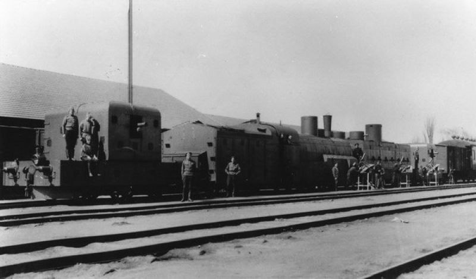

Бронепоезда Белой армии
Советская пропаганда использовала образ бронепоезда как один из самых узнаваемых образ Гражданской войны. Пышущий артиллерийским и пулеметным огнем железнодорожный монстр - такой же непременный участник художественных фильмов о тех годах, как тачанка. Правда, метод стрельбы (пусть даже и из лука) с движущейся повозки известен с античных времен, а вот обшитый броней паровоз, оснащенный мощными огнестрельными орудиями - символ именно первых десятилетий XX в. Не случайно большой любитель прогресса нарком обороны Л.Д. Троцкий предпочитал перемещаться по фронтам Гражданской войны именно на своем персональном, оборудованном всеми достижениями тогдашней техники, спецпоезде. Правда, это был не бронепоезд, зато имя Троцкого было присвоено бронепоездам №№12 и №89. Да и строки из песни «Каховка» до сих пор на слуху:
Мы мирные люди, Но наш бронепоезд Стоит на запасном пути.
Бронепоезда были, конечно же, и у Белой армии, не только у Красной, но при чтении воспоминаний о Гражданской войне обнаруживается удивительный факт. Большевистская армия, защищавшая, казалось бы, интересы, неимущих классов (пролетариата и беднейшего крестьянства) была оснащена гораздо более добротным вооружением, чем отряды, сформированные из свергнутой знати. Белогвардейцы в первый год Гражданской войны представляли собой с точки зрения амуниции и вооружений армию самых настоящих оборванцев. Поэтому и бронепоезда им приходилось изготавливать из самых простых подручных материалов. Вот несколько цитат (здесь и далее используются материалы из 6-го тома издания «Белое движение в России», составленного С.В. Волковым):
На железнодорожной станции, где расположился мой штаб, тотчас по ее занятии дроздовцы установили уже пулемет на дрезину и погнались за уходившими эшелонами большевиков; другие мастерили самодельный «броневой поезд» из платформ с уложенными на них мешками с землей и ставили орудие, пулеметы.
Или такое:
8 августа конный офицерский полк взял ст. Холмская и на ней железнодорожный состав с паровозом. Этот трофей поступил в распоряжение прапорщика Шмидта… «Забронировав» платформы шпалами и поставив на них пулеметы, он таким образом сформировал «бронепоезд» и стал его командиром. На следующий день с ним он принял активное участие в атаке Конным полком ст. Ильинская. Атака «бронепоезда» была исключительной по дерзости, несмотря на то что красные имели большие силы и бронепоезд: прапорщик Шмидт ворвался на станцию и огнем пулеметов расстроил всю их оборону, а когда орудие 1-й батареи накрыло их своими снарядами, то расстройство красных перешло в панику. А в это время Конный полк охватил станцию… Атака Конного полка завершилась захватом совершенно исправного бронепоезда. Немедленно из Екатеринодара прибыла группа артиллеристов 1-й батареи и пулеметчиков во главе с командиром взвода этой батареи, капитаном Харьковцевым 1-м53, и вступила в обслуживание захваченного бронепоезда, названного «Офицер». Капитан Харьковцев стал его командиром. Прапорщик Шмидт свой «бронепоезд» переформировал во вспомогатель к «Офицеру», а сам вступил в исполнение своих прямых обязанностей, имея уже в своем распоряжении и вспомогатель, и железнодорожный состав.
Известен также «еловый» бронепоезд под командой капитана Ковалевского:
Красные бронепоезда открыли сильный огонь и подбили наш бронепоезд (собственно говоря, это не был бронепоезд, а платформа с 3-дюймовым орудием. Вместо щитов платформа была кругом обложена шпалами, которые давали гораздо меньшую защиту. Бронепоезд называли «еловый»). В 6 часов 30 минут колонна полковника Жебрака и полковника Ползикова соединились… Колонна шла правее железнодорожного пути, и 2-й офицерский полк везли в эшелоне под прикрытием «елового» бронепоезда.
«До взятия станции Тихорецкая в Добровольческой армии настоящих бронепоездов не было», - констатирует другой мемуарист.
Чтобы пополнить этот недостаток, так как борьба с красными велась, в главном базируясь на железные дороги, начиная со взятия станции Торговая, сооружались артиллеристами и пулеметчиками самодельные бронепоезда, а командами на них были те же артиллеристы и пулеметчики, среди которых было немало мальчуганов-баклажек (дроздовцы своих юных добровольцев почему-то прозвали баклажками). После взятия станции Торговая был сооружен такой самодельный бронепоезд артиллеристами и пулеметчиками – дроздовцами. Они взяли простую железнодорожную платформу, борта ее обложили метками с зерном, песком и землей и за такое прикрытие поместили трехдюймовое орудие, а между метками, в примитивные бойницы, поставили пулеметы. Толкал такую «броневую» площадку паровоз без брони. Такой необычный «бронепоезд» дерзко кидался в атаку даже на бронепоезда противника и всегда заставлял их уходить, но после каждого такого боя приходилось хоронить лихих бойцов «бронепоезда» (по нескольку человек иногда). Слишком большой ценой платили они за свою удаль. Например, в бою под Песчанокопской на наш «бронепоезд» навалилось сразу несколько бронепоездов красных. Наш лихой «бронепоезд» под командой капитана Ковалевского отстреливался под их огнем из своего единственного легкого орудия. Вскоре все мешки на бортах платформы были разметаны и была пробоина на площадке, а потом, от прямого попадания, «бронепоезд» загорелся. Он стал уходить с поля битвы в виде огромного столба багрового дыма, все время продолжая стрелять из орудия. Когда «бронепоезд» подошел к нашим цепям, то все, бывшие там, видели стоящих среди крови и гари, почерневших от дыма мальчиков-пулеметчиков, уцелевших после боя, которые продолжали как безумные кричать «ура», а один из них – стрелять из орудия. Такого сорта «бронепоезда» дроздовцы прозвали «украинской хатой».
У красных тоже были самодельные бронепоезда:
Самодельный бронепоезд красных, который стоит на этой станции, старается повернуть свои пушки против «Верного» и не может. Он пыхтит и начинает отходить к Тихорецкой. Броневик и бронепоезд, постепенно сближаясь, мчатся рядом на юг, осыпая друг друга пулеметным огнем.
Однако у белых до некоторых пор изготовленных заводским способом бронепоездов не было вообще. Они пополняли арсенал Добровольческой армии исключительно как трофеи, добытые в боях:
На железнодорожных путях красными были оставлены три бронепоезда и много составов, порожних и нагруженных военным имуществом, десятками орудий, ящиками с патронами и снарядами, даже один аэроплан.

Не может не удивлять техническое превосходство отвитых у армии «рабочих и крестьян» бронепоездов:
Бронепоезд красных имел дальнобойную морскую пушку Канэ и был вне досягаемости нашего огня.
Количество бронепоездов участвовавших в Гражданской войне, исчислялось всего лишь десятками, поэтому им, как кораблям, часто присваивались имена собственные. У белых были, например, боевые составы с названиями «Единая Россия» (из числа захваченных в бою на станции Тихорецкая), «Витязь», «Генерал Шкуро», «Вперед за Родину!». Сходства с флотом железнодорожным войскам придавало и то, что обслуживали их часто командированные на берег моряки Черноморского и Балтийского флотов. Кстати, единицами исчислялись не только бронепоезда, но и бронеавтомобили (броневики). Им тоже давали собственные имена: «Верный», «Корниловец».
Как белые, так и красные понимали, что уничтожение бронепоездов противника является ключом к успеху в боевых действиях, поэтому не жалели сил для достижения этой цели:
Наш «бронепоезд», чтобы не наскочить на испорченное полотно железной дороги, медленно продвигался вперед, толкаемый обычным паровозом. Как известно, вдоль железнодорожного полотна на одинаковых расстояниях стоят телеграфные столбы и верстовые столбики. Это дает возможность точно установить расстояние до определенного места, куда должен подойти бронепоезд, чем и воспользовались большевики. Они решили пожертвовать одним орудием, но уничтожить наш «бронепоезд». Они поставили, укрыто в насадке подсолнухов возле будки, орудие и выжидали подход «бронепоезда» к тому месту, до которого была точно высчитана дистанция. Тогда они открыли огонь гранатами. Первая же граната попала в ящики со снарядами позади орудия и вызвала взрыв снарядов, которым была перебита вся прислуга, кроме прапорщика Сосновского, которому удалось выскочить из платформы. Все это произошло на глазах наступающих цепей 2-го Офицерского полка, которые бегом бросились вперед, захватили орудие, но виновников гибели «бронепоезда» не нашли, они успели скрыться в подсолнухах.
Не считали потерь в стремлении уничтожить вражеские бронепоезда и белые:
На самой станции командир роты капитан Морозов узнал, что в 4 верстах от станции застрял бронепоезд красных. Гурьбой по полотну шли к нему корниловцы. Рядом по дороге тянулась артиллерия, пулеметные тачанки. В темноте вырисовывалась на рельсах черная громада. Раздался окрик: «Стой! Кто идет?» Ответ: «Корниловцы!» – и в один миг, с криками «ура!», офицеры забросали бронепоезд ручными гранатами. 6 дальнобойных орудий и 20 пулеметов были добычей капитана Морозова. … Средняя колонна лишь на полпути до ст. Кисляковская вступила в бой с красными, не оказавшими ей большого сопротивления. Но лихо и смело действовал их бронепоезд, тормозивший наступление, пока не был подбит снарядами. Он едва двигался, подавая тревожные свистки и у семафора станции, прямое попадание гаубичного снаряда в вагон со снарядами, произведшее страшный взрыв, прекратило его сопротивление. С потерей своего бронепоезда красные очистили станцию и остановились верстах в трех за ней.
Наконец, надо отметить, что выстрелом именно с бронепоезда был убит один из самых ярких лидеров Белого движения, один из главных организаторов Добровольческой армии С.Л. Марков.
Марков очистил от мелких большевистских банд район между Юлой и Манычем и приступил к операции против Шаблиевки. Станция оказалась занятой сильным отрядом с артиллерией и бронепоездами. Взять ее в этот день не удалось. Весь день 12-го продолжался тяжелый и упорный бой, вызвавший серьезные потери, и только к вечеру, очевидно, в связи с общей обстановкой большевики начали отступать. Уходили и бронепоезда, посылая последние, прощальные снаряды по направлению к брошенной станции. Одним из них вблизи от Маркова был тяжело ранен капитан Дурасов… Другой выстрел – предпоследний – был роковым. Марков, обливаясь кровью, упал на землю.
Мемуаристы сходятся во мнении, что уцелей он, и исход Гражданской войны мог бы быть другим.